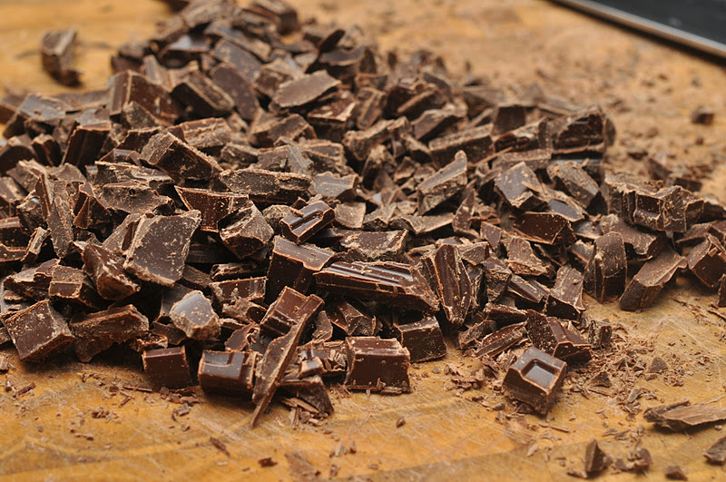

Toffee is stunningly simple to make. All you need is sugar, butter, and cream. All you do is boil those three ingredients together. The technique might be a little tricky (candy is always a little tricky to make) in the cooking process, because a boiling pot of sugar and butter gets really hot and you have to stir constantly if you don't want it to burn! Once it's boiled at the "hard crack" temperature for ten minutes, thinly spread the mixture on an edged cookie sheet to cool.
Butter is extremely important for toffee - it's where all the flavor comes from! You'll want to avoid "salted" butter if you can. You're making something sweet, not savory!
I like to use this really fancy butter just for toffee - it has a rich, creamy taste

Chocolate is optional, but who doesn't like it? A nice, dark chocolate will pair perfectly with the buttery toffee flavor. I think the darker, the better.
Throw small chocolate chunks onto the hot toffee (once it's out of the pot and on to the sheet) and quickly spread them with a rubber spatula.
Good toffee nuts are:
Sprinkle some raw or toasted nuts on the chocolate just after spreading, when it's still malleable.
If it doesn't - no worries! It's sure to still taste delicious. Chow down!